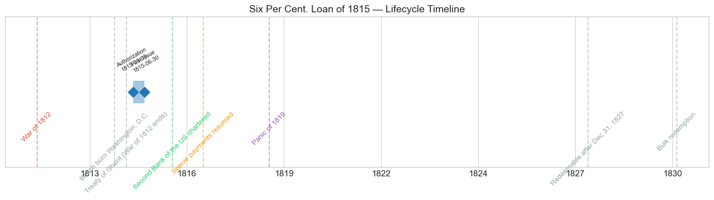
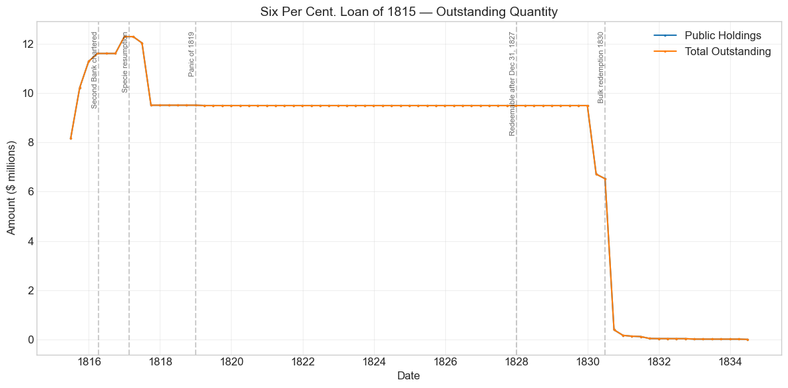
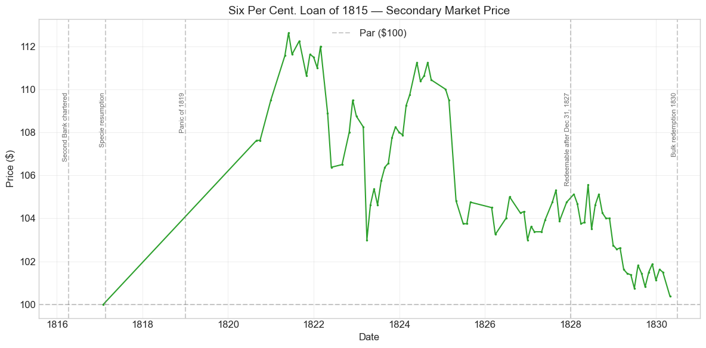
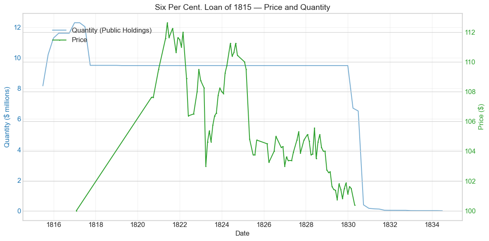
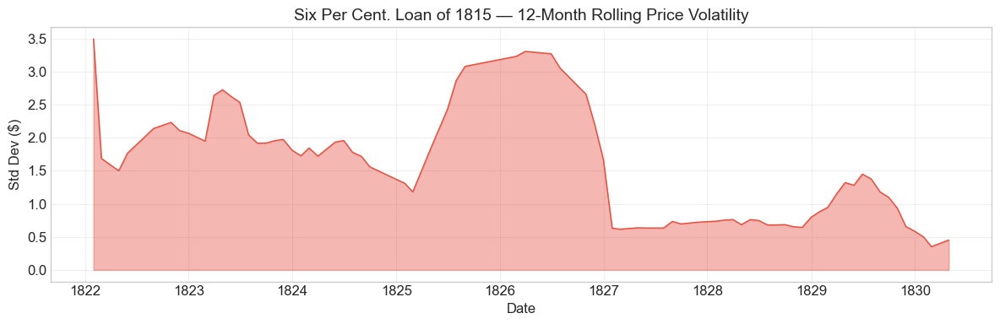

Bond Biography: Six Per Cent. Loan of 1815#
Funding the War’s Paper: The Six Per Cent Side of the 1815 Conversion#
An enhanced chapter from the Hall-Payne-Sargent US Federal Bond Database (2,857 issues, 1776-1960)
Bond ID (L1): 20069 | Category: Interest Bearing > Marketable > Long Term Bond
Data note. The price series holds a single print in January 1817, which falls inside the bank-paper window (August 1814–February 1817, when prices were quoted in the paper of banks that had suspended specie payments), and then nothing until August 1820. All later quotations are in specie-convertible money.
import pandas as pd
import numpy as np
import matplotlib.pyplot as plt
import matplotlib.patches as mpatches
import datetime
import warnings
warnings.filterwarnings('ignore')
plt.style.use('seaborn-v0_8-whitegrid')
plt.rcParams.update({'figure.figsize': (12, 6), 'font.size': 12,
'axes.titlesize': 14, 'axes.labelsize': 12})
# Load the bond database
store = pd.HDFStore('../data/BondDF.h5', mode='r')
BondList = store['BondList']
BondQuant = store['BondQuant']
BondPrice = store['BondPrice']
store.close()
BondQuant_T = BondQuant.transpose()
BondPrice_T = BondPrice.transpose()
bond_id = 20069
print(f'Loaded data for: Six Per Cent. Loan of 1815 (ID: 20069)')
/Users/thomassargent/anaconda3/lib/python3.9/site-packages/pandas/core/arrays/masked.py:60: UserWarning: Pandas requires version '1.3.6' or newer of 'bottleneck' (version '1.3.5' currently installed).
from pandas.core import (
Loaded data for: Six Per Cent. Loan of 1815 (ID: 20069)
Overview#
The Six Per Cent. Loan of 1815 was authorized under the Act of March 3, 1815. It was first issued on June 30, 1815 with a coupon rate of 6.0%. During its lifetime on the secondary market, the bond’s average price was $105.80, ranging from $100.00 to $112.62 (based on 86 monthly observations from 1817-01-31 to 1830-04-30). Peak outstanding reached $12.29 million on 1816-12-31.
This bond is one half of a pair. The acts of early 1815 – February 24 and March 3 – were Secretary of the Treasury Alexander J. Dallas’s answer to the wreckage that the War of 1812 had made of federal finance: a floating mass of depreciated Treasury notes serving as a de facto currency, banks outside New England suspended, and a Treasury that had failed during late 1814 to meet some obligations punctually. The remedy was to fund the floating debt into long-term stock on terms attractive enough to make conversion voluntary. The small, non-interest-bearing Treasury notes could be funded into stock bearing 7 percent – the instrument whose biography is told in the chapter on the Seven Per Cent. Stock of 1815 (Bond ID 20064). The larger, interest-bearing Treasury notes were fundable into 6 percent stock. The Six Per Cent. Loan of 1815 is the instrument created by that second, larger channel: under the Act of March 3, 1815 – which authorized a loan on the order of $18.5 million for the redemption of Treasury notes (Bayley 1881) – some $12.3 million of stock was ultimately created, making the 6 percent side the bigger of the two funding operations.
Like its 7 percent sibling, this bond was conceived in crisis and lived in comfort. Issued months after news of the Treaty of Ghent had restored the government’s credit, it spent its entire quoted life at or above par, sailed through the Panic of 1819 without visible distress in our data, reached its all-time high above $112 during the deflation of 1821, and was quietly redeemed at par in 1830 as the Jackson administration drove the national debt toward extinction. Where the 7s tell the story of the funding mechanism at its most desperate – a premium coupon offered to holders of paper that paid no interest at all – the 6s show the same mechanism operating on the better class of wartime paper, at a lower coupon, on a larger scale, and with a longer life.
Historical Context#
The following major events occurred during this bond’s lifetime:
Date |
Event |
Category |
|---|---|---|
1812-06-18 to 1815-02-18 |
War of 1812 |
War |
1814-08-24 |
British burn Washington, D.C. |
Other |
1814-12-24 |
Treaty of Ghent (War of 1812 ends) |
Other |
1816-04-10 |
Second Bank of the US chartered |
Legislation |
1817-02-20 |
Resumption of specie payments |
Monetary |
1819-01-01 to 1821-12-31 |
Panic of 1819 |
Crisis |
The Debt the War Left Behind#
The fiscal catastrophe that produced this bond is described at length in the chapter on the Seven Per Cent. Stock of 1815 (Bond ID 20064), and the step-by-step deterioration of the Treasury’s borrowing terms is traced in the chapters on the war loans of 1812-1814 (Bond IDs 20048, 20052, 20056, 20058). In brief: the British blockade strangled customs revenue, Congress came late to internal taxation, the May 1814 loan sold at 88 and the separate August 1814 offering only at 80 percent of face value, and after the burning of Washington in August 1814 the banks outside New England suspended specie payments. The Treasury fell back on successive issues of Treasury notes – short-dated, interest-bearing paper (the standard rate worked out to 5.4 percent a year) that circulated as a substitute currency and went to a discount as its volume grew. By early 1815 the outstanding notes were, in Dallas’s own assessment, a prostrate public credit made visible.
The acts of February 24 and March 3, 1815 offered noteholders an exit: convert the paper into long-term funded stock, payable in coin. The February act channeled the small non-interest-bearing notes into 7 percent stock; the March act provided for funding the larger interest-bearing notes into 6 percent stock, authorizing a loan of roughly $18.5 million for the redemption of Treasury notes. Because the large notes already bore interest and stood closer to par than the small ones, a smaller sweetener sufficed: 6 percent rather than 7. The database records this bond’s price sold as 0.95 – consistent with stock being issued at the rate of $100 of stock for $95 of notes or money, which raised the effective yield above the nominal 6 percent coupon and did for the large-note holders, through the issue price, part of what the extra coupon point did for the small-note holders.
How the War and Its Aftermath Show Up in This Bond#
The War of 1812 itself never touches this bond’s price record: the stock was created after the peace, and it was born into the healing market described in the 20064 chapter – Ghent news in February 1815, reviving trade, wartime tax rates still in force, and budget surpluses by 1816-1817. The Second Bank of the United States was chartered in April 1816, the banks resumed specie payments in February 1817, and the reorganized sinking fund of the Act of March 3, 1817 began systematically retiring war debt – an operation whose footprint appears in this bond’s quantity series in late 1817.
As for the Panic of 1819, this bond’s data are largely silent, for an instructive reason: apart from a single quotation in January 1817, the price series does not begin in earnest until August 1820. The panic years fall almost entirely inside that gap, so we cannot trace a panic dip here as we can for the 7s (which softened only a few points). What the data do show is the panic’s aftermath: the deflation engineered in part by the Second Bank’s contraction raised the real value of fixed coin-payable coupons, and when quotations resume in 1820-1821 the stock stands at $107-$112 – its all-time high of $112.62 coming in May 1821, precisely the deflation peak at which its sibling issues also crested. The Panic of 1819 was a crisis of banks, land speculators, and commodity prices, not of federal credit, and the premium prices of this bond in its wake are the proof.
# Bond Lifecycle Timeline
fig, ax = plt.subplots(figsize=(14, 4))
# Key dates
dates = [('Authorization', '1815-03-03'), ('First Issue', '1815-06-30')]
events = [('War of 1812', '1812-06-18', 'war'), ('British burn Washington, D.C.', '1814-08-24', 'other'), ('Treaty of Ghent (War of 1812 ends)', '1814-12-24', 'other'), ('Second Bank of the US chartered', '1816-04-10', 'legislation'), ('Specie payments resumed', '1817-02-20', 'monetary'), ('Panic of 1819', '1819-01-01', 'crisis'), ('Redeemable after Dec 31, 1827', '1828-01-01', 'other'), ('Bulk redemption', '1830-06-30', 'other')]
import matplotlib.dates as mdates
from datetime import datetime
# Plot bond lifetime bar
d0 = datetime.strptime(dates[0][1], '%Y-%m-%d')
d1 = datetime.strptime(dates[-1][1], '%Y-%m-%d')
ax.barh(0, (d1 - d0).days, left=mdates.date2num(d0), height=0.3,
color='#1f77b4', alpha=0.4, label='Bond Lifetime')
# Mark key dates
for label, date_str in dates:
d = datetime.strptime(date_str, '%Y-%m-%d')
ax.plot(mdates.date2num(d), 0, 'D', color='#1f77b4', markersize=10)
ax.annotate(f'{label}\n{date_str}', (mdates.date2num(d), 0.25),
ha='center', va='bottom', fontsize=8, rotation=30)
# Mark historical events
colors = {'war': '#e74c3c', 'crisis': '#9b59b6', 'legislation': '#2ecc71', 'other': '#95a5a6', 'monetary': '#f39c12'}
for name, date_str, cat in events:
d = datetime.strptime(date_str, '%Y-%m-%d')
ax.axvline(mdates.date2num(d), color=colors.get(cat, 'gray'), alpha=0.5, linestyle='--')
ax.annotate(name, (mdates.date2num(d), -0.25), ha='center', va='top',
fontsize=10, rotation=45, color=colors.get(cat, 'gray'))
ax.set_yticks([])
ax.xaxis.set_major_formatter(mdates.DateFormatter('%Y'))
ax.set_title('Six Per Cent. Loan of 1815 — Lifecycle Timeline')
ax.set_ylim(-1, 1)
plt.tight_layout()
plt.show()

Bond Features#
Feature |
Detail |
|---|---|
Name |
Six Per Cent. Loan of 1815 |
Authorizing Act |
March 3, 1815 |
Authorization Date |
March 03, 1815 |
First Issue Date |
June 30, 1815 |
Term |
15 years |
Redeemable After |
December 31, 1827 |
Coupon Rate |
6.0% |
Payment Frequency |
4.0 times/year |
Callable |
No |
Payable in Coin |
Yes |
Authorized Amount |
N/A in database (act authorized a loan of roughly $18.5 million) |
Price Sold |
0.95 ($100 of stock for $95 of Treasury notes or money) |
Two features deserve comment. First, the issue price of 95: unlike the 7 percent stock, which was issued at par against small notes, the 6 percent stock carried its inducement in the price rather than the coupon, lifting the subscriber’s effective yield above 6 percent. Second, the redemption terms: the stock was not redeemable at the government’s pleasure until after December 31, 1827 – three years later than the 7s’ date of December 31, 1824. That difference in redemption protection would govern the two bonds’ very different endings: the 7s were extinguished in 1825, while the 6s survived, still trading at a premium, until 1830.
# Display full bond features from database
row = BondList.loc[20069]
display_cols = [
"Treasury's Name Of Issue", 'Authorizing Act', 'Term Of Loan',
'First Issue Date', 'First Redemption Date', 'Final Redemption Date',
'Coupon Rate', 'Coupons Per Year', 'Callable', 'Coin',
'Authorized Amount', 'Price Sold'
]
print('Bond Features from Database:')
print('=' * 55)
for col in display_cols:
if col in row.index:
print(f' {col:<30} {row[col]}')
Bond Features from Database:
=======================================================
Treasury's Name Of Issue Six Per Cent. Loan of 1815
Authorizing Act March 3, 1815
Term Of Loan 15 years
First Issue Date 1815-06-30 00:00:00
First Redemption Date NaT
Final Redemption Date NaT
Coupon Rate 6.0
Coupons Per Year 4.0
Callable 0.0
Coin 1.0
Authorized Amount nan
Price Sold 0.95
Bond Quantity Over Time#
The bond’s outstanding quantity peaked at $12.29 million on 1816-12-31. Data spans from 1815-06-30 to 1834-06-30 (77 quarterly observations).
# Bond quantity over time
fig, ax = plt.subplots(figsize=(12, 6))
for stype in ['Public Holdings', 'Total Outstanding']:
try:
s = BondQuant_T.loc[(20069, stype)]
s = s[s.notna()]
if len(s) > 0:
ax.plot(s.index, s.values / 1e6, marker='.', markersize=3, linewidth=1.5, label=stype)
except KeyError:
pass
ax.set_title('Six Per Cent. Loan of 1815 — Outstanding Quantity')
ax.set_xlabel('Date')
ax.set_ylabel('Amount ($ millions)')
ax.legend()
ax.grid(True, alpha=0.3)
events = {'1816-04-10': 'Second Bank chartered', '1817-02-20': 'Specie resumption', '1819-01-01': 'Panic of 1819', '1828-01-01': 'Redeemable after Dec 31, 1827', '1830-06-30': 'Bulk redemption 1830'}
for date_str, label in events.items():
d = pd.Timestamp(date_str)
ax.axvline(d, color='gray', alpha=0.4, linestyle='--')
ax.text(d, ax.get_ylim()[1]*0.97, label, rotation=90, va='top', ha='right', fontsize=8, alpha=0.7)
plt.tight_layout()
plt.show()

Quantity Analysis#
The quantity path traces the bond’s life in four phases:
Accumulation by conversion (1815-1816). Like its 7 percent sibling, this stock was not sold in a single subscription; it accumulated as holders of interest-bearing Treasury notes presented them for funding. The first entry, $8.17 million at the end of June 1815, shows how quickly the large-note holders moved – a far bigger opening balance than the 7s’ $2.65 million three months later, reflecting both the larger stock of interest-bearing notes outstanding and the attraction of the 95 issue price. Outstanding stock climbed to $11.29 million by December 1815 and reached its peak of $12.29 million in December 1816. Against the roughly $18.5 million the act had authorized, take-up of about $12.3 million made this the largest single funding operation of the postwar consolidation – larger than the $9.05 million that flowed into the 7s.
The 1817 reduction. Between June and September 1817 outstanding stock fell by about $2.5 million, from $12.03 million to $9.51 million. The timing points to the postwar debt-retirement machinery: 1817 was the year of overflowing surpluses and of the reorganized sinking fund created by the Act of March 3, 1817, and the Treasury retired large amounts of war debt that year. Because this stock was not redeemable at the government’s pleasure until after 1827, the reduction would have come through purchase or negotiated reimbursement rather than a call; the record for this particular operation is less well documented than the aggregate retirement figures, so we note the timing without pressing the details. A similar, smaller 1817 reduction appears in the 7 percent stock’s series.
The long plateau (1818-1829). From early 1818 the outstanding amount sat essentially frozen at $9.49-9.51 million for a dozen years. The stock could not be called before 1828, and its persistent premium price made open-market retirement expensive relative to redeeming debt that was already callable – the 7s in 1825, then other issues in turn. The plateau through the Panic of 1819 also confirms that no forced liquidation of federal debt occurred in the crisis: the panic reshuffled who held the stock, not how much existed.
Redemption (1830). Once the post-1827 redeemability window opened and the Treasury – by then executing the Jackson administration’s program of extinguishing the national debt – worked its way down the list of callable stocks, the loan of 1815 was retired rapidly: from $9.49 million at the end of 1829 to $6.71 million in March 1830, $0.39 million by September 1830, and $0.17 million by year-end. The dribble of residual balances thereafter – tens of thousands of dollars shrinking to $6,566 by mid-1834 – represents unpresented certificates awaiting owners who had not yet come forward, the standard tail of every early federal redemption rather than live debt.
Secondary Market Prices#
Overall Statistics (1817-01-31 to 1830-04-30): Mean $105.80, Range $100.00–$112.62, Std Dev $3.43, 86 observations.
By Period:
Period |
Mean |
Std |
Min |
Max |
Obs |
|---|---|---|---|---|---|
Issue to End (1815-06 to 1830-04) |
$105.80 |
$3.43 |
$100.00 |
$112.62 |
86 |
Two features of this record should be flagged before interpreting the chart. First, the series is not continuous: after a single quotation of exactly $100.00 in January 1817, no further observations appear until August 1820, so the bond’s first five years – including the Panic of 1819 – are essentially unobserved. The lone 1817 entry, sitting precisely at par, should be treated cautiously; an isolated round-number quotation in a thin early market may reflect a nominal or stale listing as easily as a trade. Second, once quotations begin in earnest in 1820 the bond never trades below par: like its 7 percent sibling, a security created because the government’s credit had collapsed spent its observed life at a premium.
# Annotated price chart
fig, ax = plt.subplots(figsize=(12, 6))
s = BondPrice_T.loc[(20069, 'Average')]
s = pd.to_numeric(s, errors='coerce').dropna()
if len(s) > 0:
ax.plot(s.index, s.values, marker='.', markersize=3, linewidth=1.5, color='#2ca02c')
ax.axhline(100, color='black', alpha=0.2, linestyle='--', label='Par ($100)')
ax.set_title('Six Per Cent. Loan of 1815 — Secondary Market Price')
ax.set_xlabel('Date')
ax.set_ylabel('Price ($)')
ax.legend()
ax.grid(True, alpha=0.3)
events = {'1816-04-10': 'Second Bank chartered', '1817-02-20': 'Specie resumption', '1819-01-01': 'Panic of 1819', '1828-01-01': 'Redeemable after Dec 31, 1827', '1830-06-30': 'Bulk redemption 1830'}
for date_str, label in events.items():
d = pd.Timestamp(date_str)
ax.axvline(d, color='gray', alpha=0.4, linestyle='--')
ax.text(d, ax.get_ylim()[1]*0.97, label, rotation=90, va='top', ha='right', fontsize=8, alpha=0.7)
plt.tight_layout()
plt.show()

# Price and Quantity — dual-axis chart
fig, ax1 = plt.subplots(figsize=(12, 6))
# Quantity (left axis)
for stype in ['Public Holdings', 'Total Outstanding']:
try:
q = BondQuant_T.loc[(20069, stype)]
q = q[q.notna()]
if len(q) > 0:
ax1.plot(q.index, q.values / 1e6, color='#1f77b4', alpha=0.6, label=f'Quantity ({stype})')
break
except KeyError:
pass
ax1.set_xlabel('Date')
ax1.set_ylabel('Quantity ($ millions)', color='#1f77b4')
ax1.tick_params(axis='y', labelcolor='#1f77b4')
# Price (right axis)
ax2 = ax1.twinx()
p = BondPrice_T.loc[(20069, 'Average')]
p = pd.to_numeric(p, errors='coerce').dropna()
if len(p) > 0:
ax2.plot(p.index, p.values, color='#2ca02c', marker='.', markersize=2, label='Price')
ax2.set_ylabel('Price ($)', color='#2ca02c')
ax2.tick_params(axis='y', labelcolor='#2ca02c')
ax1.set_title('Six Per Cent. Loan of 1815 — Price and Quantity')
ax1.grid(True, alpha=0.3)
fig.legend(loc='upper left', bbox_to_anchor=(0.1, 0.9))
plt.tight_layout()
plt.show()

Price Analysis#
Read alongside the quantity series, the price path has a simple logic: a 6 percent coin-payable coupon on an ever-safer credit, capitalized at a premium during the deflation, then pulled back toward par as redemption approached.
1820-1821: the deflation peak. When continuous quotations begin in August 1820 the stock already stands at $107.62, and it climbs through the deflation that followed the Panic of 1819 to its all-time high of $112.62 in May 1821. Falling prices raised the real value of fixed coin coupons, and the whole family of federal issues crested together – the 7 percent stock touched $111.38 within weeks of this bond’s peak. That the 6s at their peak briefly commanded a higher price than the 7s reflects their longer remaining life: the 7s’ premium was already being eroded by their January 1825 redemption date, while the 6s’ coupons were protected until 1828.
1822-1823: easing off the peak. Prices drifted down through 1822 and dipped to $103.00 in March 1823 – the same month the 7s touched their corresponding trough – before recovering to $108 by year-end. The dip is modest and common to the sibling issues, suggesting general market conditions rather than anything specific to this bond; where individual months wobble without visible cause, the thinness of early quotation lists is the likelier explanation.
1824-1825: the last full premium. Through 1824 the stock traded at $109-111, its final period of unencumbered premium pricing. In the spring of 1825 the price stepped down abruptly to about $104 and stayed in a $103-105 band through 1828. The timing is telling: early 1825 was precisely when the Treasury redeemed the 7 percent stock at par en masse, a pointed demonstration of what awaited any premium-coupon issue once its protection lapsed. With this bond’s own redeemability date (after December 31, 1827) now inside the horizon that markets price, the premium compressed to roughly the value of the coupons still protected – textbook pull-to-redemption, not distress.
1826-1830: the glide to par. From 1826 the price eroded gently: $103-105 through 1828, $100.75-102.75 through 1829, and a final quotation of $100.38 in April 1830, on the eve of the bulk redemption recorded in the quantity data that spring and summer. A bondholder watching the Treasury retire the debt issue by issue could compute this trajectory in advance, and evidently the market did.
Detected Price/Quantity Events#
The following significant movements were auto-detected:
Date |
Type |
Change |
Explanation |
|---|---|---|---|
1815-09 |
quantity_increase |
+25.1% |
The funding mechanism at work: holders of interest-bearing Treasury notes converting into 6% stock under the Act of March 3, 1815 ($8.17M to $10.21M). Administrative accumulation, not a news event. |
1817-09 |
quantity_decrease |
-21.0% |
About $2.5 million retired in the surplus year 1817, when the reorganized sinking fund (Act of March 3, 1817) was aggressively reducing war debt. Since the stock was not yet callable, retirement would have proceeded by purchase or negotiated reimbursement; the detailed record is thin, so we note timing rather than mechanism. |
1820-08 |
price_spike |
+7.6% |
(data gap) An artifact of the series’ structure: the “spike” is measured from the lone January 1817 quotation of $100.00 across a three-and-a-half-year gap to the resumed quotation of $107.62. It records the cumulative postwar appreciation of federal 6s – including the deflation-driven rise after 1819 – not a one-month move. |
1830-03 |
quantity_decrease |
-29.3% |
The redemption begins: with the stock callable after December 31, 1827 and the Jackson-era Treasury retiring debt as fast as surpluses allowed, $2.8 million was paid off in the first quarter of 1830. |
1830-09 |
quantity_decrease |
-94.0% |
The main event: outstanding stock collapsed from $6.5 million to under $0.4 million as the bulk of the loan was reimbursed at par. |
1830-12 |
quantity_decrease |
-57.0% |
Redemption of stragglers; $0.17 million remained. |
1831-03 |
quantity_decrease |
-20.1% |
Unpresented certificates being brought in for payment. |
1831-09 |
quantity_decrease |
-65.1% |
Continued cleanup of unpresented certificates. |
1832-12 |
quantity_decrease |
-51.8% |
Ditto; the balance is now in the tens of thousands of dollars. |
1834-06 |
quantity_decrease |
-58.2% |
The final recorded residue: $6,566 of stock whose owners had not yet claimed payment – a bookkeeping tail, not live debt. |
The detector’s “None identified” entries are themselves informative. Every one of this bond’s large movements is administrative – conversion in, purchase and redemption out – rather than a response to battlefield or market news. That is the signature of a bond that lived its whole observed life inside a solvent, surplus-running government’s balance sheet operations.
Price Volatility#
Maximum drawdown: -10.9% (from peak on 1821-05-31 to trough on 1830-04-30)
Average monthly return: 0.014%
The chart below shows the 12-month rolling standard deviation of prices. The headline drawdown deserves demystification: a “-10.9% loss” that takes nine years to unfold, ending on the day the series ends at a price of $100.38, is not distress – it is the slow, predictable descent of a premium bond toward its par redemption value, with every step along the way accompanied by 6 percent coin coupons. Measured volatility is low throughout and consists mostly of the gentle 1822-1825 repricing; the elevated early readings partly reflect the sparse quotations with which the series begins. Compare the war loans of 1812-1814, whose volatility charts record genuine crises: this bond never had one.
# Rolling volatility (12-month window)
p = BondPrice_T.loc[(20069, 'Average')]
p = pd.to_numeric(p, errors='coerce').dropna()
if len(p) >= 12:
rolling_std = p.rolling(window=12).std().dropna()
fig, ax = plt.subplots(figsize=(12, 4))
ax.fill_between(rolling_std.index, rolling_std.values, alpha=0.4, color='#e74c3c')
ax.plot(rolling_std.index, rolling_std.values, color='#e74c3c', linewidth=1)
ax.set_title('Six Per Cent. Loan of 1815 — 12-Month Rolling Price Volatility')
ax.set_xlabel('Date')
ax.set_ylabel('Std Dev ($)')
ax.grid(True, alpha=0.3)
plt.tight_layout()
plt.show()
else:
print('Insufficient data for rolling volatility (need >= 12 observations)')

Issuance, Distribution, and Redemption#
The bond was sold at 95 ($100 of stock for $95 of face value paid in) – but overwhelmingly not for cash. Subscribers paid in Treasury notes, presenting them for cancellation in exchange for certificates of funded 6 percent stock.
Who Bought It#
There was no underwriting syndicate and no fixed subscription book: the stock came into being at the Treasury’s loan offices as holders of the larger, interest-bearing Treasury notes elected to fund them under the Act of March 3, 1815. Those notes – issued in denominations of $100 and up through the war – had been taken chiefly by banks, merchants, and contractors in the course of lending to and dealing with the government, so the natural constituency of this stock was the commercial and banking community that had accumulated the war’s paper. That distinguishes it from its 7 percent twin, whose small-denomination feedstock had diffused into general hand-to-hand circulation. Banks in the middle states, the largest holders of government paper after the suspension, were surely prominent subscribers, though the loan-office records do not permit a precise census here.
The Terms, and Why They Worked#
The 95 issue price gave large-note holders an immediate 5 percent bonus in face value plus a coin-payable 6 percent coupon – an effective yield above 6.3 percent on money paid in – in exchange for surrendering short-dated paper of uncertain redemption. Conversion was brisk: $8.17 million of stock existed by the end of June 1815, $11.29 million by December, and $12.29 million at the peak in December 1816, out of an authorization of roughly $18.5 million. That the authorization went unfilled is itself evidence of recovery: as peace revenue returned and the notes themselves rose toward par, the incentive to fund weakened, and the Treasury had less need to press the operation.
Redemption#
The stock’s life ended in three movements. First, about $2.5 million was retired in 1817, the great surplus year of the postwar sinking fund. Second, a twelve-year plateau at $9.49 million while the stock remained protected from call – the Treasury meanwhile redeeming the 7s (1825) and other callable issues in sequence. Third, the endgame: redeemable after December 31, 1827, the loan was reimbursed at par mainly during 1830, as the Jackson administration’s surpluses ground the national debt toward the zero it reached in 1835. Outstanding amounts fell from $9.49 million at the end of 1829 to under $0.4 million by September 1830. The data show a clean cash redemption; the small balances that linger to 1834 are unpresented certificates, not refinanced debt.
Implications and Legacy#
The Larger, Quieter Twin#
Within the pair, the 6s were the workhorse: $12.3 million funded against the 7s’ $9.05 million. They were also the longer-lived, and their fifteen-year arc gives the database one of its cleanest illustrations of how contract terms, not credit news, govern a safe bond’s price. Every major feature of this bond’s record – the premium plateau, the 1821 deflation peak, the 1825 step-down when the 7s’ redemption showed premium bondholders their future, the glide to $100.38 on the eve of the 1830 call – follows from the coupon, the price level, and the redemption date. Nothing in the observed record required the market to reassess whether the United States would pay.
From Prostrate Credit to No Debt At All#
That is the deepest lesson of the bond’s biography. An instrument created to fund the paper of a government that had, in 1814, missed payments and watched its capital burn, ended its life fifteen years later being redeemed at par ahead of the complete extinction of the national debt – the only time in American history the federal government has owed essentially nothing. The Second Bank, the resumption of specie payments in 1817, the postwar tariff revenue, and above all the demonstrated will to pay rebuilt federal credit within a decade; the Panic of 1819, severe as it was for banks and debtors, left no mark on this bond that our data can detect. Subscribers who exchanged depreciated wartime notes at 95 for this stock in 1815 and held to redemption earned a safe premium return – their reward, as with the 7s, for lending confidence to a government at the moment it had none to spare.
A Window into the Database#
For readers of the Hall-Payne-Sargent database, the Loan of 1815 also carries a methodological moral. Its price series opens with a lone, suspiciously round par quotation and a multi-year gap; its detected “events” are dominated by administrative conversions and redemptions; its largest apparent drawdown is a pull-to-par artifact. Early-nineteenth-century quotation lists were thin, and the honest reading of such a record credits contract mechanics and bookkeeping before it credits news. Where this chapter has hedged, that is why.
References#
Primary and Archival Sources#
Bayley, R. A. (1881). The National Loans of the United States, From July 4, 1776 to June 30, 1880. Washington: Government Printing Office. (The standard descriptive record of the Act of March 3, 1815 and the funding of Treasury notes into 6% stock.)
Act of February 24, 1815 (authorizing Treasury notes, including small notes, and their funding into stock).
Act of March 3, 1815 (authorizing a loan for the redemption of Treasury notes; the authority under which this stock was issued).
Act of March 3, 1817 (reorganizing and endowing the sinking fund).
Department of the Treasury, Alexander J. Dallas, Reports on the State of the Finances (1814-1816).
Secondary Sources#
Payne, J., Szoke, B., Hall, G. & Sargent, T. (2025). “Costs of Financing US Federal Debt Under a Gold Standard: 1791-1933.” Quarterly Journal of Economics.
Hall, G. J. & Sargent, T. J. Fiscal histories of US war finance, including analyses of the War of 1812 debt and the Treasury’s 1814 embarrassments.
Adams, H. (1889-1891). History of the United States of America During the Administrations of James Madison (the classic narrative chapters on war finance, 1814-1815).
Dewey, D. R. (1918). Financial History of the United States. New York: Longmans, Green and Co.
Studenski, P. & Krooss, H. E. (1952). Financial History of the United States. New York: McGraw-Hill.
Hickey, D. R. (1989). The War of 1812: A Forgotten Conflict. Urbana: University of Illinois Press. (Chapters on the financial collapse of 1814.)
Perkins, E. J. (1994). American Public Finance and Financial Services, 1700-1815. Columbus: Ohio State University Press.
Kagin, D. H. (1984). “Monetary Aspects of the Treasury Notes of the War of 1812.” The Journal of Economic History, 44(1).
Rothbard, M. N. (1962). The Panic of 1819: Reactions and Policies. New York: Columbia University Press.
Generated by the Bond Biography Agent using the Hall-Payne-Sargent Bond Database. Narrative enrichment draws on Bayley (1881), Dewey (1918), Hickey (1989), Kagin (1984), and the war-finance literature cited above. See the companion chapter on the Seven Per Cent. Stock of 1815 (Bond ID 20064) for the full account of the 1814 fiscal crisis and the funding mechanism.